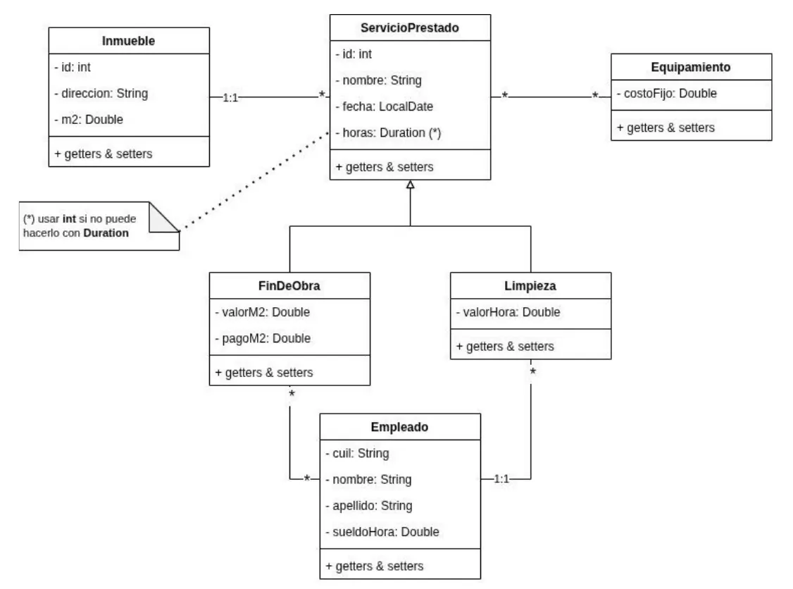
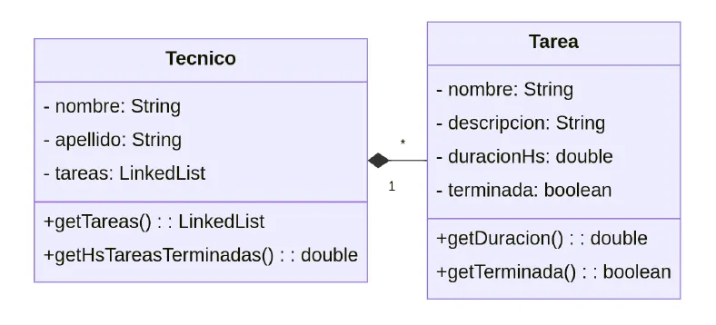

Parcial
Un diagrama de clases para pasar a Java, un método con reglas de negocio y un método corto sobre una colección.
Resumen no juzgado. Todavía nadie evaluó si alcanza para estudiar solo con esto.
Antes de estudiar de acá
Esta página describe lo que piden las hojas. No hay apunte de la cátedra en el Drive, así que no se escriben definiciones de Java de memoria ni se resuelven consignas. Para practicar, usá Ejercicios.
Cómo viene el parcial
Ejercicio 1, 6 puntos: de diagrama de clases a código, con un método de cálculo. Ejercicio 2, 4 puntos: un método sobre objetos relacionados. Ninguna de estas hojas trae preguntas de teoría.
| Hoja | Método del ejercicio 1 | Clases con herencia | Método del ejercicio 2 |
|---|---|---|---|
| Parcial 2026 | getGananciaTotal() | ServicioPrestado, con FinDeObra y Limpieza | getConsumo y debeReponerStock |
| Recuperatorio 2025 | getCostoMensual | Dispositivo, con SmartPhone, Tablet y Notebook | cantLargas |
| Parcial 2025 | getSueldo() | Empleado, con Chofer, Vendedor y Coordinador | getEjemplaresAPedir |
| Recuperatorio 2024 | getPagoEncargado() | Empleado, con Encargado. Servicio, con ServicioPropio, ServicioDeTerceros y MusicaEnVivo | mejorPrueba |
| Parcial 2024 | getPrecioFinal() | Evento, con EventoFacturadoPorInvitado y EventoPrecioFijo. ServicioCatering, con ServicioCateringCustom | getHsTareasTerminadas |
El Recuperatorio de 2022 tiene la misma forma, con un método getSalary() y dos métodos de promedio. Es del plan viejo y lleva su marca.
El ejercicio 1
«Construya el código fuente en java para el diagrama de clases anexo.» La hoja pide:
- Definición de las clases, herencia y atributos.
- Relaciones entre las clases. «Queda librado a su elección en cuál clase representar las variables y métodos necesarios para la asociación.»
- Los métodos necesarios para modelar esas relaciones y para ejecutar el método pedido.
El método «debe programarse utilizando los conceptos del paradigma de orientación a objeto utilizando herencia, polimorfismo y redefinición».
Las 5 hojas traen esas tres palabras en negrita. Al terminar, revisá tu código buscándolas.
Las hojas también dicen que «pueden desarrollar métodos intermedios que consideren necesarios o convenientes». O sea que podés partir el cálculo en métodos más chicos.
Lo que se repite en las reglas
| Qué aparece | En cuántas hojas | Dónde |
|---|---|---|
| Una regla distinta según el tipo de objeto | 5 de 5 | Todas |
| Una suma pedida con palabras («sumatoria», «suma») | 4 de 5 | Todas menos el Recuperatorio 2025 |
| Una condición con un mínimo | 2 de 5 | Parcial 2024 (invitados) y Parcial 2025 (pasajes) |
El Recuperatorio 2025 repite el caso de dispositivos del Parcial 2014 B, con un diagrama casi igual.
Leer el diagrama de clases
La hoja no explica su notación, así que conviene conocerla antes de entrar. Esta tabla junta lo que se ve en los 5 exámenes. Cuando la hoja aclara algo con palabras, va la cita.
| En el diagrama | Dónde se ve | Qué dice la hoja |
|---|---|---|
| Triángulo vacío que apunta a una clase | Las 5 hojas | La consigna pide «herencia». Las clases del lado de abajo son los tipos de la de arriba |
<<abstract>> | Recuperatorio 2025 (Dispositivo) | Marca de clase abstracta. No se explica más |
1 de un lado y * del otro | Parcial 2024 (Tecnico y Tarea) | «Los técnicos cuentan con una lista de tareas asignadas» |
1 de un lado y * del otro | Recuperatorio 2024 (Velocista y Prueba) | «Los velocistas cuentan con una LinkedList de pruebas de velocidad» |
* en el lado de una relación | Parcial 2026 (ServicioPrestado y Equipamiento) | «Algunos pueden no utilizar ninguno» |
1..1, 0..*, 1..*, 0..1 | Recuperatorio 2025 y hojas de 2014 | No se explica. Lectura de este resumen: mínimo y máximo |
| Rombo negro | Parcial 2024 (Tecnico y Tarea) | No se explica |
Nota con (*) o texto en rojo | Parcial 2026 y Parcial 2025 | Es parte de la consigna. Leela |

Parcial 2026, página 2.

Parcial 2024, página 2. La misma relación está en la línea y en el atributo tareas: LinkedList.
Clases en el medio que guardan un dato
3 de los 5 exámenes la traen. MenuEvento tiene cantidad entre Evento y Menu. LineaPedido tiene cantidad entre Libro y Pedido. MedicamentoUtilizado tiene cantidad entre Atencion y Medicamento. Fijate qué dice la consigna de esa cantidad antes de escribir el método.
La nota en rojo del Parcial 2025
Debajo del diagrama dice «Un cliente tiene muchos pasajes y un pasaje pertenece a un solo cliente». Los números dibujados en esa línea parecen decir lo contrario. Una nota así puede corregir el dibujo. Si dudás, preguntá durante el examen.
Herencia, redefinición y polimorfismo
Las hojas piden las tres palabras y ninguna las define. Esto es lo que se puede mostrar con el material.
Herencia
Se escribe con extends. Está en las hojas de 2014 y en el trabajo final de 2020.
public class Proveedor extends EntidadMadre {
private String razonSocial;
private String cuit;Documentación del trabajo final de alumnos, 2020, página 29.
En el diagrama de ese trabajo, EntidadMadre tiene id, domicilio, teléfono y correo. Proveedor suma solo razonSocial y cuit. Su constructor le pasa los datos comunes a la clase de arriba con super.
super(domicilioCalle, domicilioNumero, domicilioPiso, domicilioDepartamento,
telefono, correoElectronico);
this.razonSocial = razonSocial;
this.cuit = cuit;Misma página.
Redefinición
En las dos hojas de 2014, A y B extends A declaran los dos el mismo método. No hay otro código de la cátedra así en el Drive.
public String getTexto() { // en la clase A
public String getTexto() { // en la clase BEl Parcial 2014 B también escribe super.getLetras() y el 2014 A, super.getTexto().
Polimorfismo
El Drive no trae una definición ni un ejemplo explicado. La hoja de 2014 tiene la línea A unObj = new B(); dentro de una consigna. Esa consigna queda para que la pienses vos, con la hoja al lado.
En criollo
Una imagen para ubicarte, que no sale de la cátedra. Apretás «encender» en una tele y en una radio. La orden es la misma, pero cada aparato hace lo suyo. Quien aprieta no necesita saber cuál tiene adelante. La definición formal y el código buscalos en tu comisión.
El ejercicio 2
| Hoja | Firma | Qué pide la consigna |
|---|---|---|
| Parcial 2026 | getConsumo(desde, hasta) y debeReponerStock() | Decidir si el consumo pasa el punto de pedido |
| Recuperatorio 2025 | cantLargas(ArrayList<String> listaNombres, int tamanio) | Contar palabras con más letras que el número |
| Parcial 2025 | getEjemplaresAPedir(LinkedList<Libro> libros) | Una suma que recorre libros, líneas y pedidos pendientes |
| Recuperatorio 2024 | mejorPrueba() | Devolver la prueba de menor tiempo |
| Parcial 2024 | getHsTareasTerminadas() | Sumar las horas de las tareas terminadas |
Las 5 trabajan sobre un conjunto de objetos. LinkedList está en 3 y ArrayList en 1. El diagrama de 2026 no dice qué colección usar.
«Sin filtrar por fecha» se otorgaba el puntaje normal, 4 puntos. «Filtrando por fecha» se otorgaba 1 punto extra, 5 puntos, y había que invocar getConsumo con las fechas de hace 1 mes hasta hoy. La hoja usa LocalDate.
La sintaxis para recorrer una colección aparece en el trabajo de 2020. Es de alumnos, y sirve solo para ver cómo se escribe.
for (Proveedor p : lista) {Documentación del trabajo final de alumnos, 2020, página 19.
Tipos que aparecen en las hojas
| Tipo | Dónde se ve |
|---|---|
int, double, Double, float, boolean, String | Atributos de todos los diagramas |
LocalDate | Parciales 2024 y 2026, Recuperatorio 2024 y Parcial 2025 |
LocalDateTime | fechaHora del Recuperatorio 2024 y fechaHoraInicio del Parcial 2025 |
Duration | horas del Parcial 2026 |
LinkedList, ArrayList | Ejercicio 2 |
Lo que se pide y el material no explica
Estos temas hacen falta para el parcial y ningún archivo del Drive los enseña. Estudialos de lo que dé tu comisión o de la documentación oficial de Java.
- Qué son la herencia, el polimorfismo y la redefinición, con su definición formal.
- Clases y métodos abstractos.
- Cómo se programa una relación entre clases con una colección, y en cuál clase conviene ponerla.
ArrayListyLinkedList: cómo se crean, se recorren y se les agregan elementos.LocalDate,LocalDateTimeyDuration: cómo se comparan y se calculan.- Cómo acumular un total, contar o buscar el menor dentro de un recorrido.
Errores de las hojas
Las hojas tienen diferencias entre el texto y el diagrama. No las resuelvas por tu cuenta en el examen. Preguntá.
| Hoja | Qué pasa |
|---|---|
| Parcial 2026 | Para horas, el texto dice «utilizar tipo double» y la nota del diagrama dice «usar int». Las firmas están escritas como desde: LocalDate |
| Recuperatorio 2025 | Pide getCostoMensual «para los empleados», pero las reglas hablan de dispositivos |
| Parcial 2024 | Mesero trae precoPorHora. Tarea tiene el atributo duracionHs y el método getDuracion() |
| Recuperatorio 2022 | Pide getDPAWithoutFailingGrades, y el diagrama dice getGPAWithoutFailingGrades |
| Parcial 2014 A | Pide getAlquilerMensual y después nombra getCostoMensual. Las notas llegan en un ArrayList<Boolean> |
Lo que solo se tomó en 2014 y 2016
Solo en el plan viejo
Las hojas 2014 A y 2014 B traen más ejercicios y consignas que ya no aparecen desde 2022. Las fotos de 2016 son la misma hoja que 2014 A. Quedan como consigna, sin respuesta, porque el Drive no trae dónde contestarlas.
- Preguntas sobre clases abstractas,
public,static,void, interfaces y métodos de clase. - Excepciones: el bloque
try,throwythrows, y un método de ejemplo. - Por qué los métodos de
Mathse usan sinnew. - Similitudes y diferencias entre clases abstractas e interfaces.
- Leer un código y decir qué muestra el
mainen la consola.
Quiz del parcial
Elegí una opción para ver la explicación. Las que dicen «Se tomó» salieron de exámenes reales.
- 1
¿Cuánto vale cada ejercicio en las hojas de 2024 a 2026?
El ejercicio 1 vale 6 puntos y el ejercicio 2 vale 4.
- 2
¿Qué tres conceptos pide usar la hoja para programar el método del ejercicio 1?
La hoja dice que debe programarse «utilizando herencia, polimorfismo y redefinición».
- 3
Según la hoja, ¿en qué clase van las variables y los métodos de una asociación?
La frase es «Queda librado a su elección en cuál clase representar las variables y métodos necesarios para la asociación».
- 4
¿Qué dice la hoja sobre agregar métodos que no figuran en el diagrama?
«Pueden desarrollar métodos intermedios que consideren necesarios o convenientes para simplificar la resolución del ejercicio.»
- 5
En el Parcial 2024,
TecnicoyTareaestán unidos con1y*. ¿Cómo lo cuenta la misma hoja?El texto dice «Los técnicos cuentan con una lista de tareas asignadas», y el diagrama trae
tareas: LinkedListenTecnico. - 6
¿Qué atributo tienen
MenuEvento,LineaPedidoyMedicamentoUtilizado?Las tres son clases entre otras dos y las tres guardan
cantidad. - 7
En el Parcial 2025, ¿qué dice la nota en rojo sobre clientes y pasajes?
La nota está debajo del diagrama: «Un cliente tiene muchos pasajes y un pasaje pertenece a un solo cliente».
- 8
En el Parcial 2026, ¿qué daba programar
getConsumofiltrando por fecha?Sin filtrar se otorgaba el puntaje normal, 4 puntos. Filtrando se otorgaba 1 punto extra, 5 puntos.
- 9
¿Qué colección nombra el Recuperatorio 2025 en la firma del ejercicio 2?
La firma es
public int cantLargas(ArrayList<String> listaNombres, int tamanio). - 10
En el Parcial 2026, ¿qué tipo proponen para
horassi no sabés usarDuration?El texto en rojo dice «utilizar tipo double» y la nota del diagrama dice «usar int». Son distintos, así que conviene preguntar.
- 11
¿Qué traen las hojas de 2014 y 2016 que no aparece en las de 2024 a 2026?
Las de 2014 y 2016 traen preguntas para contestar. Las de 2024 a 2026 son dos ejercicios de programar.
Todavía no respondiste ninguna.